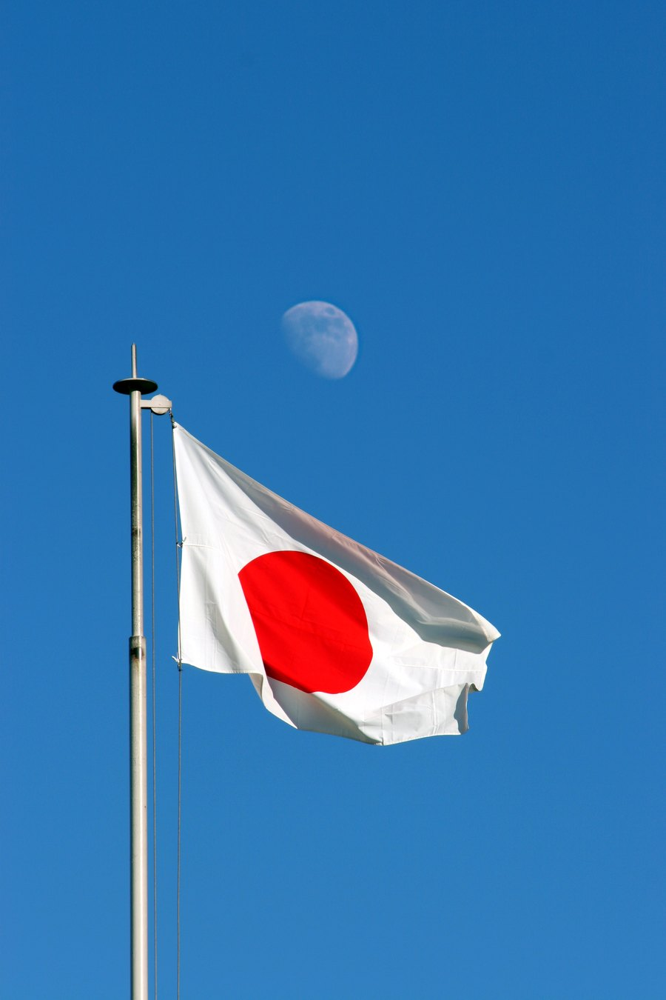

What can two combined shapes create that neither shape could create alone?
You already know what raster and vector images are, and you have placed shapes on their own layers. This week you go further: drawing shapes with precision, editing them after they are placed, and combining two or more shapes into something new. Your project this week is built entirely on that idea: two shapes are better than one.
👀 PART 1 · LOOK FIRST
Two plain shapes on their own are not very interesting. Combine and edit them and you get something new. Look at the real object below and notice the two plain shapes it is built from.
A real-world example: a rounded cap shape and a cylindrical body, two plain forms on their own, combine into one instantly recognizable new object.
💭 QUICK CHECK-IN · NO WRONG ANSWER
Think of a logo, icon, or character design you have seen. What two simple shapes might it be built from?
📚 PART 2 · DRAWING SHAPES WITH PRECISION
All digital images fall into two categories: raster images, made of tiny pixels, like a mosaic, and vector graphics, made of mathematical lines and curves that can resize infinitely without losing quality. Pixlr E is primarily a raster editor, but its Shape tool draws with vector-like precision before flattening onto your raster canvas.
Raster images
Built from pixels, each holding one color. Photographs and most digital paintings are raster. Zoom in too far and they look blurry or blocky. Common formats: JPEG, PNG, GIF.
Vector graphics
Built from math-defined lines, shapes, and curves. Resize them at any size and they stay crisp. Ideal for logos, icons, and clean designs. Common formats: SVG, AI, EPS.
Here is the same idea shown two ways: a real photograph (raster) beside a real flag design (vector-style): flat, simple shapes with clean edges.
Raster: a real photograph, built from a fixed grid of pixels
vs

Vector-style: a flat, simple design that stays crisp at any size
Left: Ansel Adams (American, 1902–1984), The Tetons and the Snake River, 1942, made for the National Park Service. Public domain (U.S. government work). Source: National Archives, via Wikimedia Commons. The photograph is a fixed grid of pixels: enlarge it far enough and the grid shows. Right: photograph of the flag of Japan by Toshihiro Oimatsu, 2006, CC BY 2.0. A flag's design is built from a small number of flat geometric shapes with clean edges: the kind of design that stays crisp printed on a card or blown up on a billboard, the same quality a vector logo has.
💡 THE SHAPE TOOL IN PIXLR E
Select the Shape tool in the left toolbar to draw rectangles, ellipses, lines, and polygons directly onto a new layer. Hold Shift while dragging to keep a shape's proportions locked (a perfect circle or square). Every shape you draw sits on its own layer, so you can resize, recolor, or delete it without touching anything else in your composition.
🔍 PART 3 · EDITING AND COMBINING SHAPES WITH LAYERS
In digital art, layers let you build, adjust, and refine your work piece by piece. Think of layers as transparent sheets stacked on top of each other, like a stack of pancakes: a plate, a pancake, a layer of butter, another pancake, syrup on top. Layers work the same way, except they are see-through, so you can see everything below while working on the top layer. This keeps your artwork organized and protects your earlier work from accidental changes.
Background layer
Shape 1: rectangle
Shape 2: circle
Combined / edited shape
Text: signature
Concept diagram. Every new shape adds a layer; you can reorder, hide, or edit each one independently.
When you open a new project, it starts with a single blank layer, visible in the Layers panel. From there, you add as many layers as your project needs. To combine two shapes into one new form, place them on separate layers so you can still move each one independently, then overlap them until the new shape reads clearly, and finally group or flatten the layers once you are happy with the result.
Before you reveal: in your notebook, sketch two simple shapes overlapped to form a new recognizable object (for example, a house, a rocket, or an animal). Then click to compare your approach.
One approach: start with the largest shape as your base layer, then add smaller shapes on top layers, checking after each addition whether the combination still reads clearly from a distance. If the new form gets confusing, hide layers one at a time to find which shape is causing the problem. There is no single correct combination; the test is whether a viewer recognizes your intended object.
⚡ TRY IT · RASTER, VECTOR, OR LAYER?
Read each statement, decide which term it describes, then check your answer.
A transparent digital sheet that lets you edit one part of your artwork without affecting the rest.
An image built from tiny pixels that can look blurry when enlarged too far.
A shape built from mathematical lines and curves, which can be resized infinitely without losing quality.
🎨 RESOLUTION MATTERS TOO
The resolution of an image is the number of pixels captured, often measured in dots per inch (dpi). Low-resolution images look blurry or grainy when enlarged; high-resolution images stay sharp when resized, but the file is larger. When you export this week's project, keep your canvas at 1920 x 1080 so your shapes stay crisp.
⚠️ WORTH KNOWING · AI SHAPE GENERATION
An AI tool can generate a finished icon or logo from a text prompt, but it will not show you how the shapes were built, layered, or combined. Practicing the combine-and-edit process yourself, one layer at a time, is what builds the skill this course is teaching.
📝 VOCABULARY
Raster ImageAn image built from a fixed grid of pixels; can blur when enlarged.
Vector GraphicAn image built from math-defined lines and curves; stays crisp at any size.
ResolutionThe number of pixels captured in an image, often measured in dpi.
LayerA transparent digital sheet that can be stacked, edited, and reordered independently.
Shape ToolThe Pixlr E tool for drawing precise rectangles, ellipses, lines, and polygons.
CombineOverlapping two or more shapes so they read as one new form.
FlattenMerging layers into one, once editing is finished.
GroupLinking multiple layers so they move and resize together.
➡️ WHAT YOU'LL DO NEXT (IN CANVAS)
1
Discussion: Two Shapes, One Idea · Week 4
Describe two simple shapes you plan to combine for this week's project and what new object or idea they will form, then respond to a classmate.
2
Quiz: Drawing & Editing Shapes · Week 4
8 questions, auto-graded in Canvas.
3
Project: Draw & Edit Shapes, "Two Are Better Than One" · Week 4
Combine and edit at least two shapes in Pixlr E to build one new recognizable form, using layers deliberately. Your graded artwork this week.
💪 THE BIG IDEA
A single shape is a building block. Two shapes, drawn with precision and combined with intention, can become an object neither shape could be alone. Layers are what make that combining safe to experiment with: you can always undo one piece without losing the rest. This week, two are better than one.
Optima Academy Online · DIGITAL ART IMAGING · Quarter 1 · Student Lesson Page